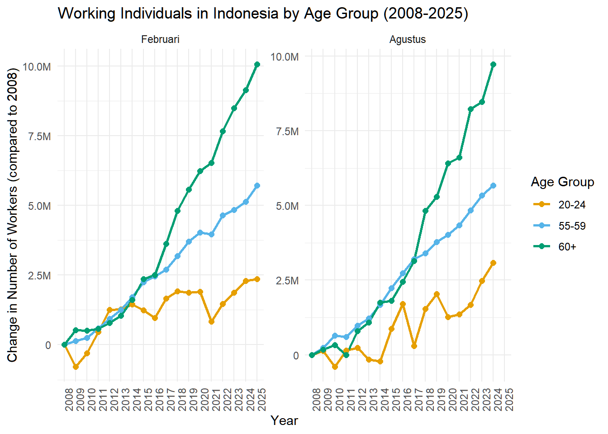
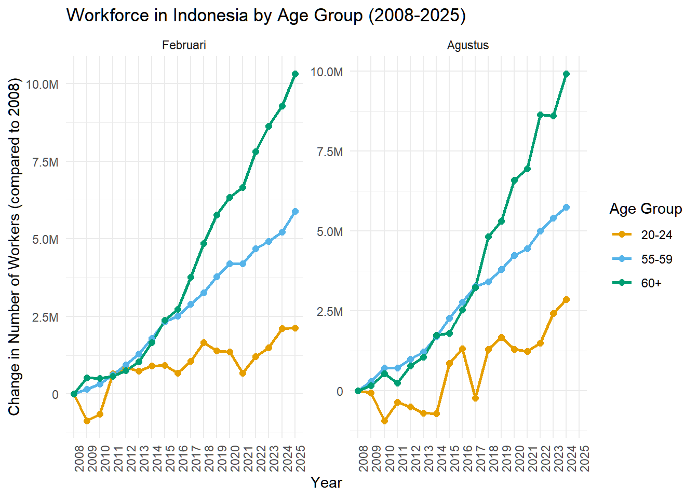
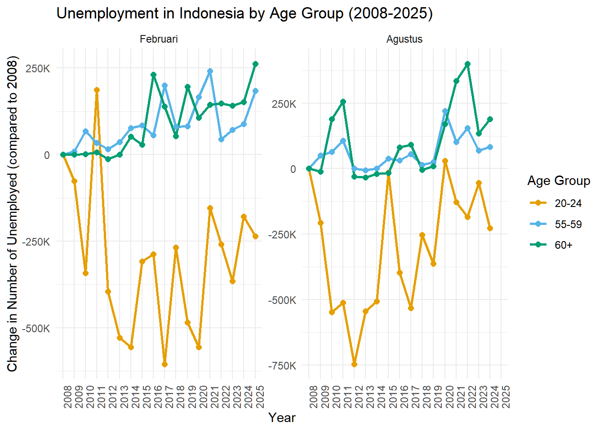

library(httr2)
library(tidyverse)Is Indonesia Workfore Aging?
Tutorial
The workforce is aging in many countries, but does it apply to Indonesia? This post aim to discover just that.
In my previous post, I have shown how we can interact with the BPS API to get the latest data on Indonesia’s workforce. Using this knowledge, we will now explore whether Indonesia does indeed have an aging workforce.
One way to demonstrate an aging workforce is to look for a widening gap between the number of workers in the 15-24 age group and the number of workers in the 60+ age group over time. If the gap is widening, it suggests that there are fewer young workers entering the workforce compared to older workers who are retiring.
To do so, we need to explore the BPS API data across years. I will examine Indonesia’s workforce data between 2008-2025 because this is the earliest year for which the BPS API provides data, and 2025 is the latest year for which we have data.
Quick API extraction
In the previous post, I have shown how to extract data from the BPS API.
We use the same approach to extract the data we need. However, this time we will expand on the th (year) parameter to include all years from 2008 to 2025. The BPS API allows us to specify the year we want to retrieve data for, so we can loop through the years and collect the data for each year.
api_key <- Sys.getenv("BPS_API_KEY")
base_url <- "https://webapi.bps.go.id/v1/api/list"
model <- "data"
lang <- "ind"
domain <- "0000"
var <- "698"
th_years <- seq(108, 125) # Years from 2008 to 2025We create a custom function to make the API request for each year and return the data in a tidy format.
make_bps_request_for_year <- function(
year, base_url, api_key, model, lang, domain, var
) {
request(base_url) |>
req_url_path_append(
"model", model,
"lang", lang,
"domain", domain,
"var", var,
"th", as.character(year), # Pass the current 'year' from the loop
"key", api_key
) |>
req_perform()
}Now we can loop through the years and collect the data for each year. We will use map_dfr from the purrr package to iterate over the years and combine the results into a single data frame.
api_responses_list <- purrr::map(th_years, function(year) {
message(paste("Fetching data for year:", year))
make_bps_request_for_year(
year = year,
base_url = base_url,
api_key = api_key,
model = model,
lang = lang,
domain = domain,
var = var
)
})Fetching data for year: 108Fetching data for year: 109Fetching data for year: 110Fetching data for year: 111Fetching data for year: 112Fetching data for year: 113Fetching data for year: 114Fetching data for year: 115Fetching data for year: 116Fetching data for year: 117Fetching data for year: 118Fetching data for year: 119Fetching data for year: 120Fetching data for year: 121Fetching data for year: 122Fetching data for year: 123Fetching data for year: 124Fetching data for year: 125We can see that the API responses are stored in a list. Each element of the list corresponds to a year and contains the data for that year.
[[1]]<httr2_response>GET
https://webapi.bps.go.id/v1/api/list/model/data/lang/ind/domain/0000/var/698/th/108/key/2c0878a4b13ca251e15d588238f17adcStatus: 200 OKContent-Type: application/jsonBody: In memory (7194 bytes)
[[2]]<httr2_response>GET
https://webapi.bps.go.id/v1/api/list/model/data/lang/ind/domain/0000/var/698/th/109/key/2c0878a4b13ca251e15d588238f17adcStatus: 200 OKContent-Type: application/jsonBody: In memory (7192 bytes)Next, we will extract the content from each API response. We define a custom function to extract the data from the API response. This function checks if the request was successful and then extracts the body of the response, which is expected to be in JSON format.
extracted_data_list <- purrr::map(api_responses_list, function(response) {
if (httr2::resp_status(response) == 200) {
resp_body <- httr2::resp_body_json(response)
return(resp_body)
} else {
warning(paste(
"Request failed for one year with status:",
httr2::resp_status(response)))
return(NULL) # Return NULL or an error indicator for failed requests
}
})Just like before, we can use map_dfr to combine the extracted data into a single data frame. We need to extract the datacontent from the extracted data, which contains the actual data we are interested in.
bps_data <- purrr::map_dfr(extracted_data_list, function(data) {
if (!is.null(data)) {
datacontent <- data$datacontent
return(enframe(datacontent))
} else {
return(NULL) # Return NULL for failed requests
}
})Now we have a data frame bps_data that contains the workforce data for Indonesia from 2008 to 2025. The data frame has two columns: name and value. The name column contains the key which contains the relevant year and employment status data once parsed, and the value column contains the corresponding values.
# A tibble: 6 × 2
name value
<chr> <list>
1 11698828108190 <int [1]>
2 6698830108189 <dbl [1]>
3 10698828108190 <int [1]>
4 4698830108189 <dbl [1]>
5 3698828108190 <int [1]>
6 7698828108190 <int [1]>We can recall our parse_key function from the previous post to parse the name column into separate columns for year, employment status, and age group.
parse_key <- function(key) {
vervar_val <- substr(key, 1, nchar(key) - 12)
var_val <- substr(key, nchar(key) - 11, nchar(key) - 9)
turvar_val <- substr(key, nchar(key) - 8, nchar(key) - 6)
tahun_val <- substr(key, nchar(key) - 5, nchar(key) - 3)
turtahun_val <- substr(key, nchar(key) - 2, nchar(key))
return(
list(
vervar = vervar_val,
var = var_val,
turvar = turvar_val,
tahun = tahun_val,
turtahun = turtahun_val
)
)
}bps_data_tidy <- bps_data |>
mutate(
value = as.double(value),
parsed_key = map(name, parse_key)
) |>
unnest_wider(parsed_key) |>
select(-c(name, var)) |>
rename(
age_group = vervar,
value = value,
employment_status = turvar,
year = tahun,
month = turtahun
) |>
select(
year, month, age_group, employment_status, value
)
head(bps_data_tidy)# A tibble: 6 × 5
year month age_group employment_status value
<chr> <chr> <chr> <chr> <dbl>
1 108 190 11 828 9394515
2 108 189 6 830 95.0
3 108 190 10 828 84600
4 108 189 4 830 92.8
5 108 190 3 828 1759409
6 108 190 7 828 196379 Now, we have a tidy data frame bps_data_tidy that contains the workforce data for Indonesia from 2008 to 2025. Now, we can label the age_group and employement_status columns to make them more readable. Because we are looking at multiple dataset across years, there is a possibility that each of them have different labels. We will create a function that extracts the unique labels from the API responses for each parameters (e.g., vervar, turvar) and returns them as a named vector.
extract_unique_labels <- function(api_response_list, element_name) {
if (is.null(api_response_list) || length(api_response_list) == 0) {
message("Input API response list is empty or NULL for element '",
element_name, "'. Returning NULL.")
return(NULL)
}
# Remove any NULL responses (e.g., from failed API calls) before processing
clean_response_list <- purrr::compact(api_response_list)
if (length(clean_response_list) == 0) {
message("No valid (non-NULL) API responses to process for element '",
element_name, "' after compacting. Returning NULL.")
return(NULL)
}
all_labels_df <- clean_response_list |>
purrr::map_dfr(\(x) {
target_element <- x[[element_name]]
if (is.null(target_element) || length(target_element) == 0) {
return(tibble(val = numeric(0), label = character(0)))
}
purrr::map_dfr(target_element, ~ tibble(
val = as.numeric(.x$val),
label = as.character(.x$label)))
})
# Final processing: unique rows, then pull
if (nrow(all_labels_df) == 0) {
message(paste("No unique labels found for element:",
element_name, ". Returning NULL."))
return(NULL)
}
unique_named_vector <- all_labels_df |>
dplyr::distinct(val, label) |> # Use distinct() for unique rows
dplyr::pull(label, name = val)
return(unique_named_vector)
}We can now use this function to extract the unique labels for each of the parameters we are interested in: vervar, turvar, turtahun, and tahun.
vervar_labels <- extract_unique_labels(extracted_data_list, "vervar")
turvar_labels <- extract_unique_labels(extracted_data_list, "turvar")
turtahun_labels <- extract_unique_labels(extracted_data_list, "turtahun")
tahun_labels <- extract_unique_labels(extracted_data_list, "tahun")Now, we can relabel the tidy data frame bps_data_tidy using the extracted labels. We will use the recode function from the dplyr package to relabel the age_group and employement_status columns.
bps_data_tidy_labeled <- bps_data_tidy |>
mutate(
age_group = recode(age_group, !!!vervar_labels),
employment_status = recode(employment_status, !!!turvar_labels),
year = recode(year, !!!tahun_labels),
month = recode(month, !!!turtahun_labels)
) |>
mutate(
age_group = factor(age_group, levels = c(
"15-19", "20-24", "25-29", "30-34", "35-39",
"40-44", "45-49", "50-54", "55-59", "60+", "Total"
), ordered = TRUE
),
month = factor(month, levels = c(
"Januari", "Februari", "Maret", "April",
"Mei", "Juni", "Juli", "Agustus",
"September", "Oktober", "November", "Desember",
"Tahunan"
)),
employment_status = factor(employment_status, levels = c(
"Bekerja", "Jumlah Pengangguran", "Jumlah AK", "% Bekerja / AK"
)),
) |>
select(year, month, employment_status, age_group, value) |>
arrange(year, month, employment_status, age_group)And, here is a sample of the labeled data frame:
# A tibble: 10 × 5
year month employment_status age_group value
<chr> <fct> <fct> <ord> <dbl>
1 2008 Februari Bekerja 15-19 5734328
2 2008 Februari Bekerja 20-24 11332576
3 2008 Februari Bekerja 25-29 13351202
4 2008 Februari Bekerja 30-34 13566222
5 2008 Februari Bekerja 35-39 13146274
6 2008 Februari Bekerja 40-44 11998948
7 2008 Februari Bekerja 45-49 10484959
8 2008 Februari Bekerja 50-54 8238848
9 2008 Februari Bekerja 55-59 5804677
10 2008 Februari Bekerja 60+ 8391823Visualizing the data
We can now visualize the data to see if there is indeed an aging workforce in Indonesia. We will create a line plot that shows the number of workers in the 15-24 age group and the number of workers in the 60+ age group over time.
bps_data_tidy_labeled |>
filter(
age_group %in% c("20-24", "55-59", "60+"),
employment_status == "Bekerja",
month != "Tahunan"
) |>
ggplot(aes(x = year, y = value, color = age_group, group = age_group)) +
facet_wrap(~ month, scales = "free_y") +
geom_line(size = 1) +
geom_point(size = 2) +
scale_color_manual(values = c(
"20-24" = "#E69F00", # Muted orange
"55-59" = "#56B4E9", # Sky blue
"60+" = "#009E73" # Bluish green
)) +
labs(
title = "Working Individuals in Indonesia by Age Group (2008-2025)",
x = "Year",
) +
scale_y_continuous(
"Number of workers",
labels = scales::label_number(scale_cut = scales::cut_long_scale())
) +
theme_minimal() +
theme(
axis.text.x = element_text(angle = 90, hjust = 1)
)Warning: Using `size` aesthetic for lines was deprecated in ggplot2 3.4.0.
ℹ Please use `linewidth` instead.
This plot shows the number of workers in the 20-24 age group and the 60+ age group over time. We can see that the number of workers in the 20-24 age group has been decreasing over time, while the number of workers in the 60+ age group has been increasing. This suggests that there is indeed an aging workforce in Indonesia.
We can further show this widening gap by centering all the values against 2008 numbers for each age group. This would further clarify whether there is a wdineing gap between the two age groups.
bps_data_tidy_labeled |>
filter(
age_group %in% c("20-24", "55-59", "60+"),
employment_status == "Bekerja",
month != "Tahunan"
) |>
group_by(age_group, month) |>
mutate(value = value - value[year == 2008]) |>
ungroup() |>
ggplot(aes(x = year, y = value, color = age_group, group = age_group)) +
facet_wrap(~ month, scales = "free_y") +
geom_line(size = 1) +
geom_point(size = 2) +
scale_color_manual(values = c(
"20-24" = "#E69F00", # Muted orange
"55-59" = "#56B4E9", # Sky blue
"60+" = "#009E73" # Bluish green
)) +
labs(
title = "Working Individuals in Indonesia by Age Group (2008-2025)",
x = "Year",
y = "Change in Number of Workers (compared to 2008)",
color = "Age Group"
) +
scale_y_continuous(
labels = scales::label_number(scale_cut = scales::cut_long_scale())
) +
theme_minimal() +
theme(
axis.text.x = element_text(angle = 90, hjust = 1)
)
This plot shows the change in the number of workers in the 20-24 age group and the 60+ age group compared to 2008. We can see that the number of workers in the 20-24 age group has been decreasing over time, while the number of workers in the 60+ age group has been increasing. This further confirms that there is indeed an aging workforce in Indonesia.
How about the overall workforce, do we also see the same trend?
bps_data_tidy_labeled |>
filter(
age_group %in% c("20-24", "55-59", "60+"),
employment_status == "Jumlah AK",
month != "Tahunan"
) |>
group_by(age_group, month) |>
mutate(value = value - value[year == 2008]) |>
ungroup() |>
ggplot(aes(x = year, y = value, color = age_group, group = age_group)) +
facet_wrap(~ month, scales = "free_y") +
geom_line(size = 1) +
geom_point(size = 2) +
scale_color_manual(values = c(
"20-24" = "#E69F00", # Muted orange
"55-59" = "#56B4E9", # Sky blue
"60+" = "#009E73" # Bluish green
)) +
labs(
title = "Workforce in Indonesia by Age Group (2008-2025)",
x = "Year",
y = "Change in Number of Workers (compared to 2008)",
color = "Age Group"
) +
scale_y_continuous(
labels = scales::label_number(scale_cut = scales::cut_long_scale())
) +
theme_minimal() +
theme(
axis.text.x = element_text(angle = 90, hjust = 1)
)
This plot shows the change in the total number of workers in the 20-24 age group and the 60+ age group compared to 2008. We can see that the number of workers in the 20-24 age group has been decreasing over time, while the number of workers in the 60+ age group has been increasing. This further confirms that there is indeed an aging workforce in Indonesia.
But, how about the unemployed?
bps_data_tidy_labeled |>
filter(
age_group %in% c("20-24", "55-59", "60+"),
employment_status == "Jumlah Pengangguran",
month != "Tahunan"
) |>
group_by(age_group, month) |>
mutate(value = value - value[year == 2008]) |>
ungroup() |>
ggplot(aes(x = year, y = value, color = age_group, group = age_group)) +
facet_wrap(~ month, scales = "free_y") +
geom_line(size = 1) +
geom_point(size = 2) +
scale_color_manual(values = c(
"20-24" = "#E69F00", # Muted orange
"55-59" = "#56B4E9", # Sky blue
"60+" = "#009E73" # Bluish green
)) +
labs(
title = "Unemployment in Indonesia by Age Group (2008-2025)",
x = "Year",
y = "Change in Number of Unemployed (compared to 2008)",
color = "Age Group"
) +
scale_y_continuous(
labels = scales::label_number(scale_cut = scales::cut_long_scale())
) +
theme_minimal() +
theme(
axis.text.x = element_text(angle = 90, hjust = 1)
)